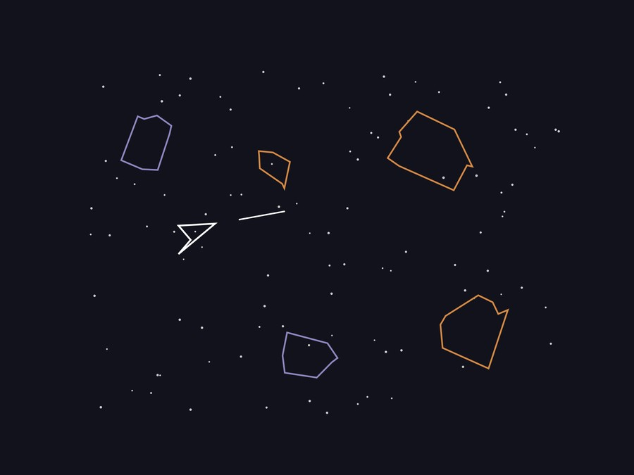

Illustrative recreation of the game scene, not an actual screenshot.
A classic Asteroids-style arcade game, built in stages ("milestones") on top of an instructor-provided Java game-engine skeleton (an abstract Game/Shape/Polygon framework) for a Data Structures course.
Built with two teammates as part of the Data Structures coursework, on top of an instructor-provided game-engine skeleton.
Why ray-casting works, geometrically. Picture a test point and an arrow drawn from it off to infinity in any fixed direction. If that point sits outside a polygon, the arrow enters and exits the shape in pairs — every crossing in has a matching crossing out — so the total number of edges it crosses is even (including zero, if it misses the shape entirely). If the point sits inside the polygon, the arrow has to cross one more boundary to escape to infinity than it does to arrive, so the crossing count is always odd. That parity trick (odd = inside, even = outside) is the entire algorithm; the code below just counts how many of the polygon's edges the ray crosses without ever computing an actual intersection point.
Built on top of an instructor-provided abstract Polygon/Shape framework. Every game object — ship, bullets, asteroids — is a polygon defined by a set of points, an offset, and a rotation. Collision detection uses the ray-casting (point-in-polygon) algorithm: cast a ray from the test point and count how many polygon edges it crosses — an odd number means the point is inside.
public boolean contains(Point point) {
Point[] points = getPoints();
double crossingNumber = 0;
for (int i = 0, j = 1; i < shape.length; i++, j=(j+1)%shape.length) {
if ((((points[i].x < point.x) && (point.x <= points[j].x)) ||
((points[j].x < point.x) && (point.x <= points[i].x))) &&
(point.y > points[i].y + (points[j].y-points[i].y)/
(points[j].x - points[i].x) * (point.x - points[i].x))) {
crossingNumber++;
}
}
return crossingNumber % 2 == 1;
}Why inheritance here, not just a shared interface. The ship, the bullets, and the asteroids all genuinely are polygons — they all have points, a position offset, and a rotation, and they all need the exact same collision-detection math. Making Ship extends Polygon is an "is-a" relationship: the ship inherits contains(), point rotation, and rendering for free, and only adds what's actually specific to being a ship (thrust, firing, lives). That's the practical test for when inheritance is the right tool versus overkill: the subclass should be able to honestly say "I am a more specific version of the parent," not just "I happen to reuse some of its code."
The ship extends Polygon and implements KeyListener directly, so movement is just state the polygon reads each frame — arrow keys flip booleans, and move() applies forward thrust along the current rotation with screen wraparound:
if (forward) {
position.x += 3 * Math.cos(Math.toRadians(rotation));
position.y += 3 * Math.sin(Math.toRadians(rotation));
if (position.x > Asteroids.SCREEN_WIDTH) position.x -= Asteroids.SCREEN_WIDTH;
else if (position.x < 0) position.x += Asteroids.SCREEN_WIDTH;
// ...same wraparound check for y against SCREEN_HEIGHT
}Coursework project — Bachelor of Science, Computer Information Systems & Finance — Westminster College